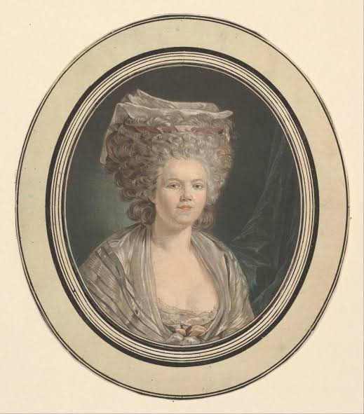
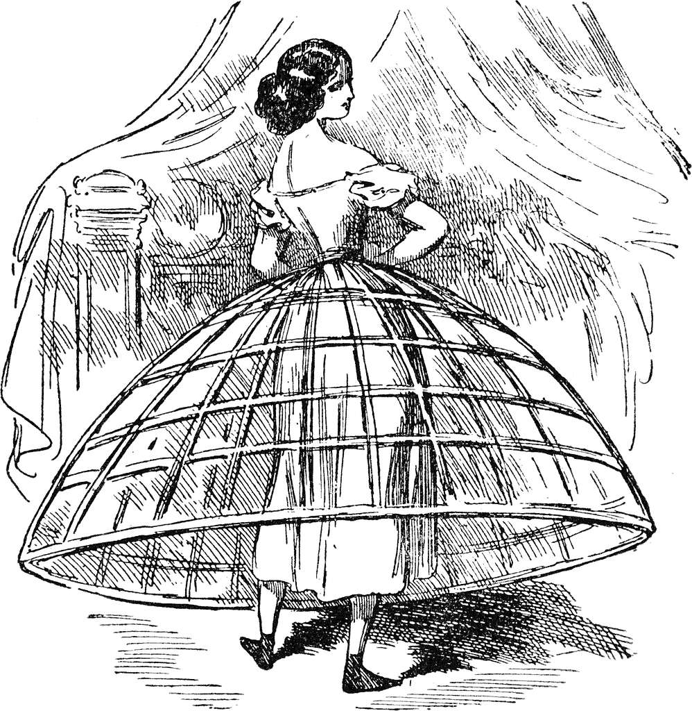
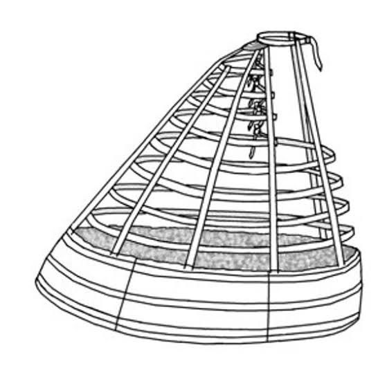

TIMELINE
1700-1900 : LES ORIGINES DE LA HAUTE COUTURE D’AUJOURD’HUI
Paris développe son activité textile et voit apparaître les premières publications illustrées consacrées aux tendances vestimentaires. Au XVIIe siècle, sous le règne de Louis XIV, la France affirme progressivement son influence sur les tendances européennes. La cour de Versailles devient une référence en matière d'élégance.
Rose Bertin (1747-1813) :
Marie-Jeanne Bertin, dite Rose Bertin, voit sa vie de marchande de modes prendre un tournant lorsque Marie-Antoinette, jeune reine de France, fait d’elle sa « Ministre des modes ». Aux côtés de la souveraine, la couturière va considérablement influencer l'habillement et fonder les prémices de la haute-couture. C'est toutefois au XIXe siècle que la mode moderne connaît une transformation majeure. Avec l'industrialisation, le développement des moyens de communication et l'essor des grands magasins, les vêtements deviennent plus accessibles. Parallèlement, une nouvelle forme de création apparaît : la haute couture.

1852 - 1870 : SOUS L'EMPIRE DES CRINOLINES:
Sous le Second Empire, la mode française connaît une période de grande prospérité, portée par le développement économique, industriel et culturel de Paris. Sous le règne de Napoléon III, la capitale devient un centre incontournable du luxe et de l'élégance, tandis que l'impératrice Eugénie contribue largement à diffuser les tendances vestimentaires de son époque. La silhouette féminine est alors dominée par la crinoline, devenue l'un des symboles emblématiques de cette période. Initialement constituée d'un jupon rigidifié, elle évolue à partir de 1859 en une structure composée de cerceaux métalliques, permettant de donner un volume spectaculaire aux jupes. Les robes se caractérisent par un corsage ajusté, une taille très marquée et une jupe ample pouvant atteindre près de 180 centimètres de diamètre. Les étoffes luxueuses, telles que la soie, le taffetas, la moire, la dentelle et le tulle, sont particulièrement appréciées. Volants, rubans, franges et broderies viennent compléter ces tenues richement ornées. La mode devient également le reflet d'une vie mondaine particulièrement active. Les femmes de la haute société, tout comme les élégantes issues d'autres milieux, peuvent changer de tenue jusqu'à cinq fois par jour selon leurs activités : promenades, visites, dîners, réceptions, spectacles ou bals organisés à la cour impériale. Chaque occasion possède son propre vestiaire, des robes de jour aux toilettes de grand soir. Parallèlement, le développement des chemins de fer et du tourisme favorise l'apparition de nouvelles tenues adaptées aux voyages, aux séjours à la montagne et aux stations balnéaires. Capes, mantelets, ombrelles, chapeaux, bottines et costumes de promenade enrichissent ainsi le vestiaire féminin. Cette période marque également un tournant dans l'histoire de l'industrie de la mode. Les grands magasins, comme Le Bon Marché, Le Printemps ou le Louvre, se développent et contribuent à la diffusion des tendances. Les expositions universelles de 1855 et 1867 font quant à elles rayonner le savoir-faire français à l'international, notamment dans les domaines du textile, de la joaillerie et des arts décoratifs.

Charles Frederick Worth (1825-1895) : fondateur de la Haute Couture
La naissance du créateur de mode : la haute couture devient une industrie de luxe et le vêtement une véritable œuvre d'art.
Né le 13 octobre 1825 à Bourne, au Royaume-Uni, Charles Frederick Worth est un couturier britannique qui va profondément transformer l'univers de la mode parisienne. Arrivé à Paris en 1845, il commence sa carrière auprès de la prestigieuse maison Gagelin, spécialisée dans les tissus et les articles de mode. Il y développe son savoir-faire, conçoit ses premières créations et présente ses modèles lors des expositions universelles de Londres en 1851 et de Paris en 1855. Fort de cette expérience, il décide de créer sa propre maison de couture. En 1858, il fonde, avec son associé Otto Bobergh, la maison Worth & Bobergh, au 7, rue de la Paix, à Paris. Cette création marque un tournant dans l'histoire de la mode. Jusqu'alors, les vêtements étaient principalement réalisés à la demande des clientes, selon leurs envies et leurs exigences. Worth bouleverse cette pratique en proposant ses propres modèles, imaginés à l'avance et présentés à sa clientèle. Il ne se contente plus d'exécuter une commande : il impose sa vision artistique et devient un véritable créateur de mode.
L'invention des collections saisonnières
Charles Frederick Worth instaure un nouveau rythme dans la création vestimentaire en organisant ses collections selon les saisons : printemps-été et automne-hiver. Les clientes peuvent ainsi découvrir les nouvelles créations, sélectionner leurs modèles préférés et les faire réaliser sur mesure, en fonction de leurs mensurations. Cette nouvelle organisation transforme progressivement le fonctionnement de la couture. Le couturier devient celui qui imagine les tendances et propose une direction artistique, tandis que la cliente choisit parmi les modèles présentés.
La naissance de la griffe : le couturier devient un artiste
L'une des grandes innovations de Worth réside dans la reconnaissance du créateur à travers ses œuvres. À l'image d'un peintre qui signe ses tableaux, il appose son nom à l'intérieur de ses vêtements grâce à une griffe imprimée. Chaque création devient ainsi identifiable et porte la signature de son auteur. Le couturier n'est désormais plus considéré comme un simple artisan chargé d'exécuter les commandes, mais comme un véritable artiste, reconnu pour son style, son imagination et son savoir-faire. Avec Worth, le vêtement acquiert une nouvelle dimension : il devient une création originale, associée à l'identité et à la réputation d'une maison de couture.
Les mannequins vivants et les premiers défilés
Worth transforme également la manière de présenter les vêtements. Il fait porter ses créations par des femmes, parfois appelées « sosies », qui les présentent directement à ses clientes dans les salons de sa maison. Cette mise en mouvement permet d'observer les vêtements autrement : les volumes, les matières, les proportions et le tombé des étoffes prennent vie sur le corps. Les clientes peuvent ainsi apprécier les modèles avant de passer commande. Cette pratique constitue l'une des premières formes de présentation sur mannequins vivants et préfigure les défilés de mode modernes ainsi que le métier de mannequin.
Worth et la transformation de la silhouette féminine
Charles Frederick Worth ne se distingue pas uniquement par ses méthodes de création et de présentation : il participe également à faire évoluer la silhouette féminine. Il est notamment associé au remplacement progressif de la crinoline traditionnelle par une nouvelle structure qui modifie la répartition des volumes de la robe. La silhouette devient moins volumineuse sur le devant et davantage projetée vers l'arrière, annonçant la tournure qui caractérisera la mode des années 1870. Cette évolution marque une étape importante dans l'histoire du vêtement féminin et illustre la capacité de Worth à accompagner et influencer les transformations de son époque.
Les créations emblématiques de Charles Frederick Worth
La crinoline à devant plat : vers une nouvelle silhouette
La crinoline à devant plat, également appelée crinoline elliptique, constitue une évolution majeure de la silhouette féminine autour des années 1865-1868.
